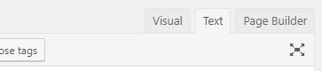

Page

Adding a Page
To add a new page
On the Admin Menu, Click in Page and a dropdown will show, then click on Add New
On the Admin Menu, Click in Page. Click on Add New beside the title name Pages on the Content Area
On the Admin Menu, hover over Page to show a dropdown then click on Add New
On the Admin Bar, hover over + New link to show a dropdown then click on Page
You can create content by using either Visual(WYSIWYG), Text(HTML) or with Page Builder

Visual(WYSIWYG) - please refer to this link to start using Visual(WYSIWYG) https://www.oomphinc.com/notes/2011/11/how-to-use-the-wordpress-wysiwyg-editor/
Text(HTML) - Use Text to add content using HTML tags.
Page Builder - please refer to this link to get started with Page Builder https://siteorigin.com/page-builder/documentation/
Click the Publish button to save and publish this Page post.
You can click on the info bar View Post or the Permalink to view your new post.
Editing a Page
On the Admin Menu, Click in Page > All Pages
Find for the Page on post list at the Content Area
Hover over that Page to bring out actions list then select Edit

Proceed to edit your content.
Click on Update button to save your changes.
Delete a Page
On the Admin Menu, Click in Page > All Pages
Find for the Page on post list at the Content Area
Hover over that Page to bring out actions list then select Trash